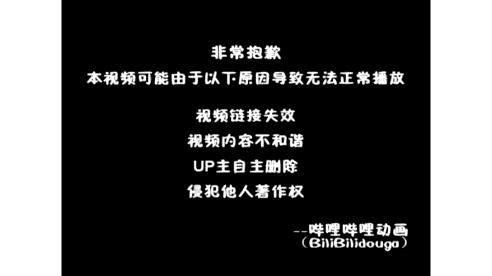
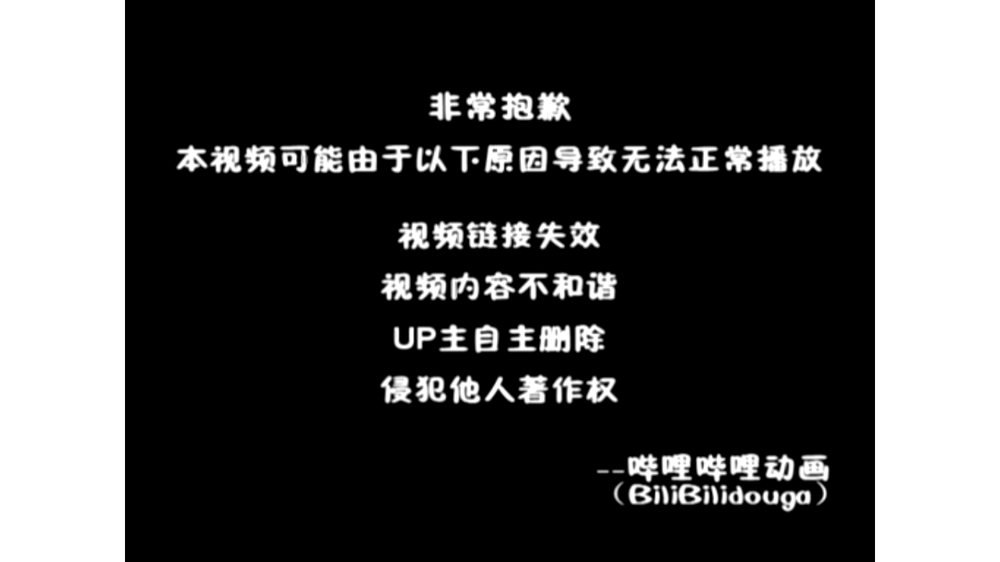

【Docker容器】零基础入门到实战教程，一天速通Linux运维容器篇（2026版） p08 课时8：实战Compose-一键部署 LNMP 服务栈
本书由课程字幕编辑而成，删除口语冗余并统一术语；时间标记用于回看原视频。
导读
本章围绕“核心概念”展开。阅读时建议在终端同步操作，并在每节结尾完成练习。
学习目标
- 理解本节的核心概念与适用边界。
- 能独立执行示例命令并验证结果。
- 掌握常见故障的定位路径。
1. 核心概念
(参考时间：00:00:02)

📷 核心概念画面
在 B 站中打开 (00:00:01)
欢迎来到我的LINUX实战课堂 很多想要入行运维的小伙伴们 之前唉在部署一些企业级的系统的时候啊 总是会觉得门槛非常的高 尤其是部署一些什么LNMP的环境啊 我们使用传统的源码编译
简直就是修仙 但是啊今天我们要聊一聊一件部署的魔力 到了我们现在这个阶段了 目标也是非常明确的 我们直接跳过那些繁琐的 容易报错的传统的安装流程
利用我们docker的compose啊 在rocky linux9上快速的构建起NGINX MYSQL和菲律宾的服务站 这不仅是提高效率 更是带领大家去体验一下 什么是基础设施及代码
大家看一下这张示意图啊 原本是复杂的架构 被拆解成了互通的容器 就好像是物流中心的集装箱 整齐划一 互不干扰
那么我也会带领大家像拆解快递单一样的 弄清楚流量是怎么样在这些容器之间流通的 为了贴合企业实战 我们的教学环境呢还是一样的 采用rocky linux9 那么大家准备好docker引擎和compose以后呢
就可以使用我们这个点石成金的魔棒 零基础也不要怕 跟着我的节奏 我们直接进入实战环节 那首先我们来了解一下 什么是LNMP的容器架构啊
刚才我们提到了容器化部署的魔力啊 那么在docker compost这个视角下面 ln mp架构到底是怎么分工的呢 我们可以把这个架构啊 想象成一个高效的物流园区 首先NGINX是园区的分拣员
当用户的请求啊 从LINUX的八零端口进来的时候 NGINX负责接客 那如果是简单的分解呢 唉静态图片他自己啊就处理掉了 那如果是一些复杂的动态任务呢
他就会通过啊反向代理把活儿派发给后端程序 那么接活的就是我们的PHPFPM啊 这个是我们的加工厂 他们是基于fast cgi协议的 哎然后他是专门负责解析一些动态的逻辑的 大家要记住的是什么呢
在容器化的环境下 它是一个独立的车间 不和NGINX啊挤在一起这样子了 哪怕我们工厂的哎任务太重了是吧 挂了 那么分拣员呢
NGINX还是可以继续站岗的 那么加工好的数据总得有地方去存对吧 那么存储的地方呢就是MYSQL数据库啊 也是我们的数据仓库 他负责的是结构化的持久化存储 那我们在rocky linux9上面去部署的时候呢
会通过docker卷挂载技术 这样子可以确保啊 即便容器销毁了仓库里的数据了 也丢不了 大家可以看一下这张对比表 那么也可以重点记录一下
我们每个组件的镜像选择和端口映射 是不一样的 在实战当中呢 我们要明确啊 哪些是对外开放的端口 哪些关键目录是要挂载到宿主机上的
那么大家也可以看一下这个提示啊 在compost的默认桥接密码啊 默认桥接网络里面啊 容器之间是通过服务名来打招呼的 所以呢在配置NGINX的时候 我们不用写具体的IP地址
直接写PHPIFPM 然后冒号9000就可以了 这样子呢他就可以找到我们的后端 搞清楚了这些角色啊 下面我们就来看一看 流量到底是怎么样去走位的
那么接下来呢 我们来搞清楚LNMP架构当中啊 一个请求是如何在各个容器之间穿梭的 那么请求的第一步嘞 是始于我们的用户的浏览器 那么我们要确保的是什么呢
我们的防火墙是不是已经放行了八零端口啊 这一步 那么到了下一步来到了我们的NGINX容器里面啊 NGINX容器啊 作为一个网关 他如果发现是菲律宾比索请求呢
他不会自己去处理 而是通过我们的fast cgi协议啊 转交给后端 如果是静态的话嘞 我们就直接返回了 好我们到了第三步了啊
应用啊 这里有一条连线 我们可以看到啊 他是哎走的一个是9000端口 对不对 他是我们的NGINX
容器和菲律宾之间通信的一个专线啊 叫做fast cgi 好那么到了第三步了 我们这里有一个哎容器叫做应用处理的 对不对 他接收到这个fast cgi请求之后啊
就开始来哎 根据我们的一些业务哎 去合理的哎查找到我们的一个数据库呀 然后也是根据我们docker compose里面定义的容器名 找到他的 那么最后呢3306这个端口啊
MYSQL这个3306端口会接收指令 并且呢返回结果到这里的话 一个完整的LNMP请求链路了 就打通了 刚才呢我们理清了LNMP的流量走位 现在的话我们得动手啊
把这些中转站给他建立起来 这个docker compost ym文件了 就是我们整个架构的施工蓝图 编写配置文件的第一步啊 是定义核心框架 这个就像咱们物流系统的总纲领啊
决定了地基稳不稳 大家可以看一下啊 version声明了我们compose文件的版本规范
命令速查
docker的compose啊 在rocky linux9上快速的构建起NGINX MYSQL和菲律宾的服务站 这不仅是提高效率 更是带领大家去体验一下 什么是基础设施及代码 大家看一下这张示意图啊 原本是复杂的
docker引擎和compose以后呢 就可以使用我们这个点石成金的魔棒 零基础也不要怕 跟着我的节奏 我们直接进入实战环节 那首先我们来了解一下 什么是LNMP的容器架构啊 刚才我们提到了容器化部署的魔力啊 那
docker compost这个视角下面 ln mp架构到底是怎么分工的呢 我们可以把这个架构啊 想象成一个高效的物流园区 首先NGINX是园区的分拣员 当用户的请求啊 从LINUX的八零端口进来的时候 NGIN
实践检查
确认命令执行结果与课程演示一致；若失败，先检查镜像、网络、权限和端口占用。
2. 操作步骤
(参考时间：00:06:52)

📷 操作步骤画面
在 B 站中打开 (00:05:00)
而surface下面呢我们会逐一去列出要部署的容器 在rocky linux9的这种环境下呢 我建议大家遵循啊三点X以上的规范 确保了我们的兼容性 接下来我们重点看一下MYSQL数据库服务的配置 它是LNMP的心脏
保存着网站的所有的核心数据 在镜像的选择上呢 我推荐大家使用MYSQL8.0的一个稳定版本 特别要提醒的是我们的零基础的同学啊 像我们mysql root password这个环境变量了 就是我们服务器的哎金库密码最高权限
对不对 大家不要设置的太简单了 什么123456这样子的是吧 哎很容易被破解掉 另外的话我们还要防止嘞 我们数据随着容器的删除而跑路
所以我们还会用到一个之前学过的 name的volumes啊 命名券作为我们的持久化存储 就像给数据啊 租了一个永久的保险柜 好了啊
那么MYSQL的地基打好了 大家觉得在配置文件里面 镜像的版本和环境变量哪个更容易出错 好大家可以想一想啊 新手应该注意哪个地方 那么刚才呢我们也了解到了我们的配置文件啊
大家可以动手去尝试着写一写 然后写完之后呢 我们来看一下这些考研题目啊 我们来随堂测试一下 看看大家对于compose的基础语法哎 掌握的扎不扎实
我们第一题考验的是YAMN的样模 文件的洁癖啊 大家在LINUX下使用vim编辑器的时候 一定要注意我们的YM格式了 是绝对禁止使用tab键的 那个会导致啊解析直接报错
我们必须要来使用空格来对齐 第二题是关于service和环境变量的 大家要记住的是service字段啊 可以定义多个并行服务的 比如我们的NGINXMYSQL 还有PHBFPM啊
而element当中的一个唉键值对 这个是属于了容器生命值的关键配置啊 大家可以仔细的阅读题目 然后根据我们前面讲到的哎 MYSQL的配置逻辑来选择正确的答案 那么不要掉进了我们缩进和语法的坑里面去
那么选好之后呢 我们来深入的分析一下 好我们来看第一道题目 在编写docker compose ym文件的时候啊 关于缩进规则的描述 哪个选项是正确的
好这个题啦 我们选B啊 选B必须要使用来空格进行缩进 通常建议是两个空格啊 严禁使用tab键 当然了
我们如果在WM里面啊进行一些配置啊 把table转成空格啊也是可以的 好吧 我们在有些课堂里面 我会去给大家讲解web的一个默认初始化配置啊 可以使用呢咱们的tab把它默认转成两个空格啊
大家可以关注一下 好那么第二道题目 我看一下在docker compose文件当中 关于service字段和环境变量的配置 哪个说法是正确的啊 这里是一道多选题
我们选项A呢是描述了我们service的核心作用 对不对 哎他的一个文案描述 我们看一下service字段是compose文件的核心 用于定义了我们的NGINX MYSQL等等
具体的容器服务啊 这个没有问题 我们选项B啊 B和C的话都是描述了我们环境变量的哎 正确的配置方式啊 都是没有问题的
那么D的是错误的 因为我们compose的优势就是在于 能够在一个文件当中定义和管理啊 多个相互关联的服务的 对不对 比如我们的LNMP套件对不对
所以呢D选项是错的 其他的ABCR都是正确的 好我们接着往下走 那么刚才呢我们在测验里面 把MYSQL的逻辑来梳理通了 对不对
接下来了 我们就会把PHP和NGINX这两块拼图也拼上去 实现真正的核心组件关联 首先我们来看菲律宾杠FPM在compose里面 我们要把宿主机的源码目录 直接挂载到容器内啊
为什么呢 为了动静分离PHP啊 就像咱们请来的大厨一样的 我们呢要把菜谱也就是源码送到他的手边上 让他专心的去处理啊 动态逻辑
而那些图片啦 样式啊等等就是叫做静态的杂活 后面啊会交给NGINX 那么说到NGINX呢 它是我们站点的门面 这里呢也映射了宿主机的八零端口
也就是互联网访问的标准入口 在LINUX环境下部署的时候 一定要记得挂载自定义配置文件 不然这位大管家可不知道 怎么样去把客人的请求 转交给刚才那个PHP大纲大厨啊
我们要把这些服务捏合在一起之后啊 还要掌握我们LINUX环境下的几个关键的机制 大家可以看一下下面这个地方啊 第一个是dependence on 他负责的是哎谁先起床 谁后起床
比如我们让数据库先启动 菲律宾再启动 但是要注意的是啊 他只管容器的启动 不管里面的服务是不是完全准备好了 另一个是网络的别名
唉这个就非常的神奇啊 在同一个网络下面呢 PHP连接数据库 不需要去GIP地址 直接通过MYSQL这个域名就可以找到对方了
命令速查
compose的基础语法哎 掌握的扎不扎实 我们第一题考验的是YAMN的样模 文件的洁癖啊 大家在LINUX下使用vim编辑器的时候 一定要注意我们的YM格式了 是绝对禁止使用tab键的 那个会导致啊解析直接报错
docker compose ym文件的时候啊 关于缩进规则的描述 哪个选项是正确的 好这个题啦 我们选B啊 选B必须要使用来空格进行缩进 通常建议是两个空格啊 严禁使用tab键 当然了 我们如果在WM里面啊进行
docker compose文件当中 关于service字段和环境变量的配置 哪个说法是正确的啊 这里是一道多选题 我们选项A呢是描述了我们service的核心作用 对不对 哎他的一个文案描述 我们看一下serv
实践检查
确认命令执行结果与课程演示一致；若失败，先检查镜像、网络、权限和端口占用。
3. 验证与排错
(参考时间：00:13:44)

📷 验证与排错画面
在 B 站中打开 (00:15:02)
这个就像给容器存了快捷拨号一样的 好接下来我们来实战一下啊 实战手把手的去把这个NLNMP环境的docker compose配置文件来给他补全 我们看一下啊 这个语法呢还是比较简单的
但是呢有很多细节 首先的话我们来这个MYSQL服务里面 补全我们的环境变量 这里面呢我们需要注意的是啊 安全性是第一位的 那么这里呢我们写了一个变量名字是多少呀
Mysql root password 那么我们要给他设置一个密码 对不对 设置密码呢我们用这个等于号给他写上去啊 等于号呢我们写一个比较查密码好吧啊 设置一个强密码
就是我们的大小写啊 符号数字啊都有的 好然后呢我们这样写一下好 那么这是第一个 接着来是我们的这个PSP是吧 给他做一个叫做挂载啊
添加一个volumes 不过这里啊写了一个叫当前目录的哎 点3W挂载到我们的容器内的 那怎么写呢 哎怎么了 是不是左树右容呀
哎左树右容 那左边是宿主机 右边是容器啊 中间用一个冒号给它隔开 最后呢我们这里给它用一个啊 单引号或者双引号给它括起来都是可以的
然后呢端口更简单了啊 我们也是一样的啊 这是主机的八零端口 映射到我们的容器内部的八零端口好 我们来点一下运行并验证好 OK全部来检测通过了
这里需要注意的是啦 我们这个YM文件对于呢空格非常敏感啊 稍微弄错一个缩进了 可能就会报错了 我们要养成这种哎检查语法的习惯 好那么同学们啊
既然我们刚才了已经练习过是吧 这个YM文件的缩进啊 以及语法等等啊 那么接下来呢大家可以在自己的电脑上啊 到了一个最激动人心的时刻了 在自己电脑上去一键启动啊
一键启动 首先呢我们在终端里面可以输入docker compose up 杠D啊 注意这个杠D了 非常关键啊 他这个意思啊
就是我们的容器可以在后台去运行啊 就像我们开餐厅一样的 是不是我们要让他哎在后面去 不用站在前台的操作 好这样子了 我们的终端就可以空出来干别的活了
那如果你没加这个的话 那就在前面一直站着啊 那么敲完这个以后回车啊 回车以后来确认一下都可以了 然后呢我们也可以确认一下哎 活干的怎么样对吧
我们可以通过这个docker compose p s 这个像课列表点评一样的啊 我们仔细去阅读 当我们的NGINX啊 菲律宾啊 以及MYSQL啊
所有的容器状态都视为up或者running的时候了 就说明我们的环境已经成功了 集结了没有掉队的 这里需要注意的是啊 我们的一个深坑 很多同学呢部署完发现网页死活打不开
这通常是因为啊 我们系统自带的防火墙把门锁死了 那我们需要用这条firewall cmd命令啊 明确的告诉我们的系统哎 八零端口还开门了啊 然后呢也要记得加上这个permanent的这个参数
这样子的话我们下次重启的时机呢 哎网站是仍然能够访问的 最后啊 哎心里面不知道他有没有搞定 我们来也可以使用docker compose log杠F啊 这个命令可以让你实时的去追踪
各个容器的心跳日志 特别是MYSQL这种大家伙 我们初始化数据了比较慢 通过日志啊看进度也是比较稳妥的方式 那么这样一套组合拳下来之后呢 部署工作就算是大功告成了
好那么刚才呢我们通过日志也确认了容器啊 已经顺利的启动了 但是这里说明一下啊 看到运行不代表啊真的能够用 接下来我们还有一步呢也是非常重要的 我们要对这套在LINUX跑起来的LNMP
进行全方位的身体检查 首先第一步了是外部的访问测试 这个就像我们新搬进了我们的办公室啊 看看灯亮不亮一样的 你直接在浏览器里面输入服务器的IP地址 只要呢你能看到我们的欢迎页
就说明外界的流量已经成功的穿过了宿主机 能够准确的找到我们的NGINX容器啊 这是最基础的一款 接下来是菲律宾的环境验证 由于呢我们要去跑动态的网站 所以啊得给PHP做一个体检
这里啊建议大家去运行一下菲律宾info这个函数 重点去检查一下那些常用的扩展 有没有挂载成功 这就好比啊检查厨师手里面的调料包全不全 决定了待会啊能不能炒出好菜 最关键的还是数据库的连接
我们要编写一个简单的PHP脚本 尝试的向MYSQL里面引入一条测试的数据 那如果写入成功了 就说明NGINXPHP以及MYSQL
命令速查
docker compose配置文件来给他补全 我们看一下啊 这个语法呢还是比较简单的 但是呢有很多细节 首先的话我们来这个MYSQL服务里面 补全我们的环境变量 这里面呢我们需要注意的是啊 安全性是第一位的 那
docker compose up 杠D啊 注意这个杠D了 非常关键啊 他这个意思啊 就是我们的容器可以在后台去运行啊 就像我们开餐厅一样的 是不是我们要让他哎在后面去 不用站在前台的操作 好这样子了 我们的终端
docker compose p s 这个像课列表点评一样的啊 我们仔细去阅读 当我们的NGINX啊 菲律宾啊 以及MYSQL啊 所有的容器状态都视为up或者running的时候了 就说明我们的环境已经成功了 集
实践检查
确认命令执行结果与课程演示一致；若失败，先检查镜像、网络、权限和端口占用。
4. 小结
(参考时间：00:20:35)

📷 小结画面
在 B 站中打开 (00:20:02)
这三兄弟之间的网络是互通的 账号权限了 也全部都对上了 那这个时候我们的LNMP架构了 才是真正的闭环了 那有些同学可能会遇到哎页面打不开的情况
这个时候了也没关系 我们使用这个docker logs 这样子的话 就可以去通过这个诶故障排查的听诊器 去具体的看一下哪个容器出了什么问题 哪里报错了
我们就去排查哪里的问题 可以让你的迅速的定位到是配置文件写错了呀 还是权限没给到位呀 哎这种懂不懂的问题 那么在LINUX生产环境里面呢 我们学会去看日志啊
也是运维工程师的必备的基本功 好那么刚才呢我们已经掌握了 利用docker logs这个听诊器来排错 接下来我们检验一下大家实战能力 是不是真的认真去做了啊 首先的话这里有三道题目
模拟了我们在LINUX现场啊 去经常容易碰到的一些翻车场景 看一下大家能不能够精准的避坑 第一道题考验的是容器的记忆力 大家在配置啊docker compose点YM文件的时候 千万不要让MYCIRCLE成了只有七秒记忆的鱼啊
把重启下了 数据全丢了 这个就是一个重大事故啊 第二题和第三题的侧重于 手术刀级别的精确维护 尤其是那个让无数的运维工程师头秃的唉
502报错 大家要好好的去琢磨一下流量是怎么走的 大家可以结合一下我们刚才讲过的 LNMP的流量走位图来分析一下 尤其是简答题啊 不要是只给一个答案
我们要尝试性的去描述一下 哎你检查问题的思路好 现在呢开始计时 准备开始答题啊 好那么都答完了是吧 大家答题速度还是比较快的啊
好我们来讲解一下 首先第一道题目是什么呀 我们的rocky linux环境当中 如果你发现啊重启MYSQL容器之后 之前录入的数据库权限全部消失了 这通常是因为在配置文件中漏掉了什么设置啊
是不是我们的持久卷呀 哎这个就没什么好说的啊 这个题比较简单啊 嗨好我们来看第二道题目 在LNMP实战当中 如果你只修改了NGINX的配置文件
不影响其他正在运行的菲律宾索和MYSQL服务 还应该只用哪条命令 哎这个题选C是不是啊 比较简单啊 那如果我们选A或者其他的是吧都是一样的 它会导致所有的啊其他的容器哎都重启了
好那么我们看最后一道题啊 最后一道题是网站维护之后啊 页面突然提示502bad gateway啊 请结合他的一个协作原理 指出你应该优先检查哪个服务的状态 并且简述你的排查步骤
那么502bad gateway 这个是运维当中最常见的错误之一 在LNMP架构当中呢 我们的NGINX啊作为反向的代理 他是没办法从后端的诶 菲律宾比索里面去获取到正确的响应的
唉就是会报这个错误 那么排查思路很简单啊 第一步 我们优先看一下我们的菲律宾后台程序啊 容器了是不是正常运行当中 那么可以用docker PS
对不对 接下来我们也可以检查一下 NGINX的一些配置文件啊 以及呢它当中的一个指向 是不是跟我们的PHP容器名址啊 或者IP端口是一致的啊
这也是一个检查的点 然后呢我们来查看一下错误的日志啊 确认连接是被拒绝了 还是找不到路径 还是说其他的一些错误啊 导致了服务出问题了
俺们来继续进一步的去排查好 那么这是第三道题的一个啊 答案参考一下啊 好我们来看最后一道题目啊 还有最后一已经讲完了 我们来看最后一页啊
Ppt 好那么经过啊刚才这轮实地演练 那我们的LNMP环境呢 已经是在LINUX上稳稳的跑起来了 那么这节课呢也就接近尾声了 咱们来复盘一下今天的一个学习成果啊
首先我们来看一看核心的知识点 我们今天呢不仅仅是启动了几个容器啊 更重要的是学会了使用docker compose 这个总导演来安排呀多个容器环境 特别是我们的数据卷哎 volume的挂载
这个是解决容器啊 失忆症的良药 也保证了咱们数据库和网页代码的安全 那么在生产环境里面呢 我们不要凭直觉去重启啊 直接重启服务
我们的老规矩是吧 先改配置 然后嘞再执行test啊 配置测试 炒菜之前呢 先尝尝咸淡
是不是盐有没有放对啊 确定没问题了 我们再去reload 这个在咱们LINUX上追求的就是一个文字啊 那么未来的进阶之路了 我们这套方案就是你面试的一个敲门砖了啊
后面我们还会接触 像cooper nis这样的大规模的集群管理 以及呢ELK认识分析路很长啊 但是呢我们只要底子打牢了 没关系啊 就不会去怕任何的复杂架构
好感谢的参与啊 那么接下来我们下节课再见
命令速查
docker logs 这样子的话 就可以去通过这个诶故障排查的听诊器 去具体的看一下哪个容器出了什么问题 哪里报错了 我们就去排查哪里的问题 可以让你的迅速的定位到是配置文件写错了呀 还是权限没给到位呀 哎这种
docker logs这个听诊器来排错 接下来我们检验一下大家实战能力 是不是真的认真去做了啊 首先的话这里有三道题目 模拟了我们在LINUX现场啊 去经常容易碰到的一些翻车场景 看一下大家能不能够精准的避坑 第
docker compose点YM文件的时候 千万不要让MYCIRCLE成了只有七秒记忆的鱼啊 把重启下了 数据全丢了 这个就是一个重大事故啊 第二题和第三题的侧重于 手术刀级别的精确维护 尤其是那个让无数的运维
实践检查
确认命令执行结果与课程演示一致；若失败，先检查镜像、网络、权限和端口占用。
总结
完成本章后，你应能围绕“核心概念”独立复现课程演示，并将方法迁移到实际 Linux 运维环境。
延伸练习
- 在独立测试环境重新执行本章命令。
- 记录每条命令的输入、输出和回滚方式。
- 为配置和数据建立备份，再进行下一章实验。